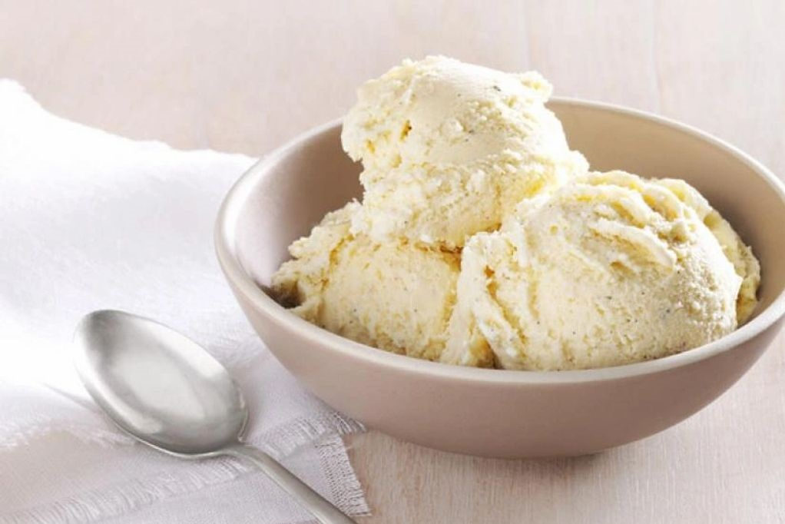
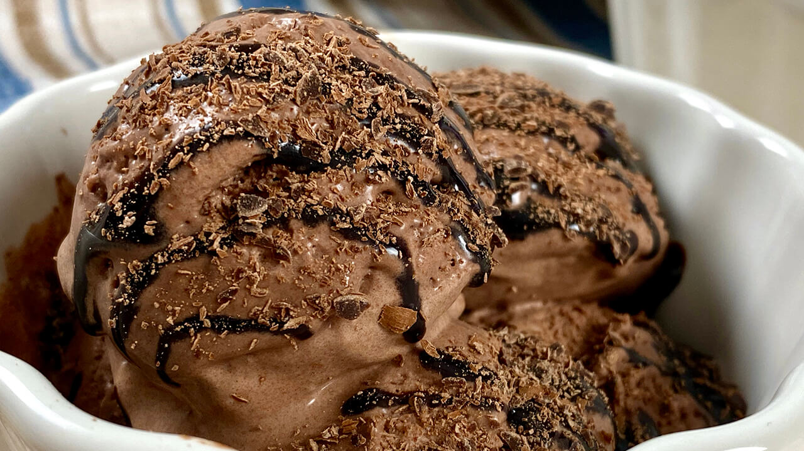
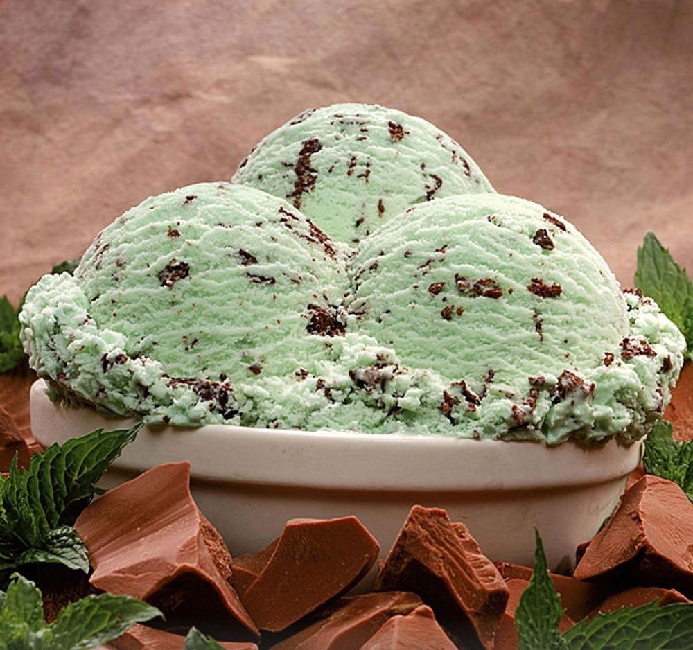
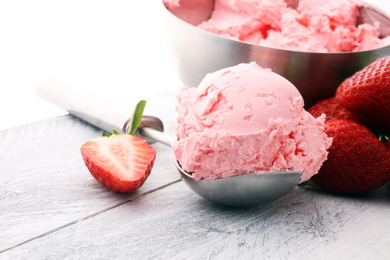
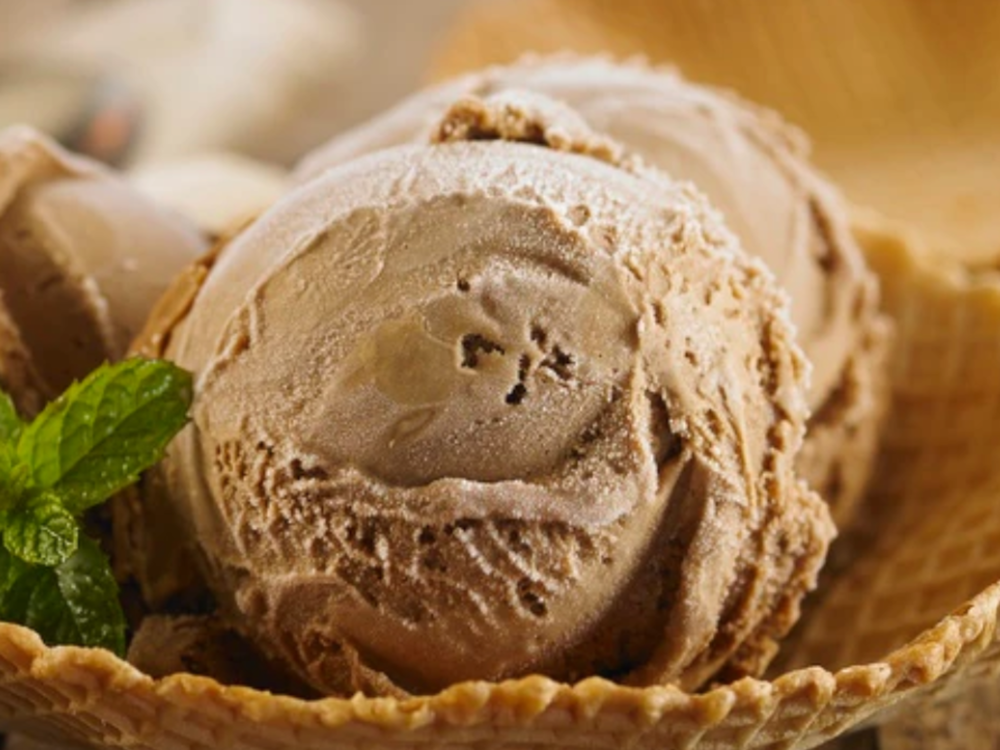

- Frutilla
- Chocolate
- Crema Americana
- Chocolate con Almendras
- Crema Flam
NUEVOS SABORES
- Granizado
- crema Cookie
- Dulce de Leche
Como Elegir un buen Helado
El buen helado ha de ser cremoso y con una textura homogénea, pero sin exceso de grasas, mucho menos de grasas hidrogenadas y sabores prefabricados. El Helado ha de tener aire, en una proporción de más o menos un 30%.
Sabores Más pedidos de Grido Helados
Cada quién tiene su helado favorito por diversas razones,pero ¿Cuáles son los que más le gusta a la gente, o mejor dicho los más vendidos son ?
Vainilla:
Es el sabor de helado más consumidoy,por consiguiente, el más vendido en todo el mundo

Chocolate:
Al ser un producto de gran popularidad en todo el mundo,El chocolate y sus variantes se ha convertido en uno de los sabores más pedidos. Destaca su variante amargo u oscuro, la cuál cuenta con gran demanda

Menta Granizada:
Quizás no sea tu favorito pero de acuerdo con diversos datos, este sabor es el segundo más pedido en Agentina

Frutilla:
Es un Sabor popular en casi todo el mundo por sus distinguidos tonos fescos y ligeramente ácidos

Dulce de leche:
Este sabor también es uno de lo más vendidos.
